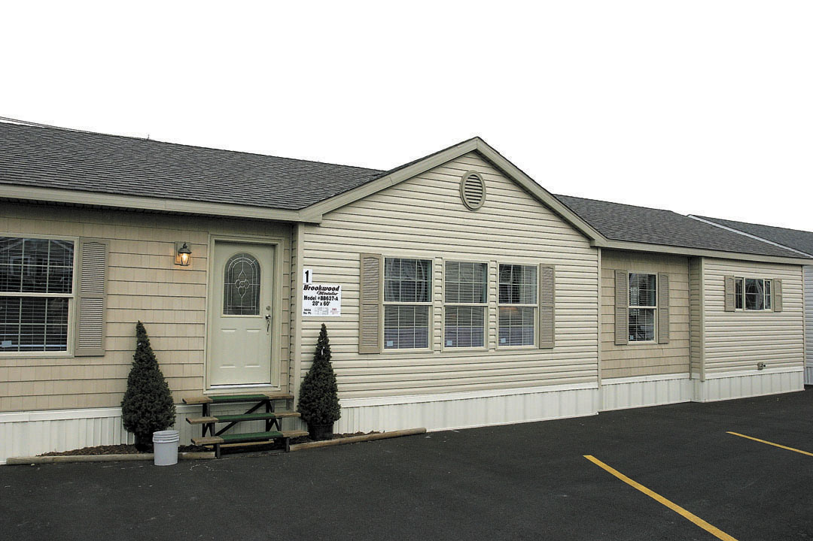

Modern editorial blog
Stories with strategy, signal, and style.
The publication front for ideas that should feel clear, bright, and worth your time.
Cover story
Cómo la IA puede revolucionar la arquitectura residencial
De la idea inicial al proyecto ejecutivo: dónde ya está cambiando el trabajo de los estudios de casas 🏡
La inteligencia artificial ya no es una promesa abstracta para la arquitectura. En estudios que diseñan viviendas, empieza a acelerar la fase conceptual, mejorar la comunicación con clientes, optimizar distribuciones y apoyar decisiones técnicas. La oportunidad no está en sustituir al arquitecto, sino en liberar tiempo de tareas repetitivas para dedicar más energía a diseño, criterio y experiencia de cliente.
